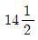
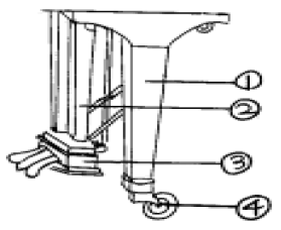
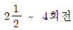
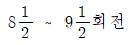
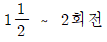

피아노조율산업기사 (2005-05-29 기출문제)
1과목: 임의 구분
1. 피아노 현 15번 선의 인장강도(kgf/mm2)는 어느 정도인가?
- 221 ∼ 239
- 241 ∼ 259
- 261 ∼ 279
- 281 ∼ 299
(정답률: 알수없음)

2. 피아노조율과 관련하여 토르크(Torque)란?
- 조율핀과 핀판과의 굳기의 관계로 그 가늠 측정에 사용되는 단어
- 조율핀의 재질의 강도
- 조율핀의 휘는 정도
- 조율핀이 점프(jump)하는 정도
(정답률: 알수없음)
3. 최초로 그랜드피아노의 레피티숀 액션은 누가 완성하였는가?
- 19세기초 미국의 허킨스
- 1809년경 프랑스의 에라르
- 1840년경 미국의 칙카링
- 19세기초 프랑스 메르센느
(정답률: 알수없음)
4. 열쇠봉 상면에서 백건 상면까지의 높이를 20±1mm로 설정하였을 때 백건 상면에서 흑건 상면까지의 높이는 몇 mm로 설정되어야 하는가?
- 12±0.5mm
- 14±0.5mm
- 16±0.5mm
- 9±0.5mm
(정답률: 알수없음)
5.

번 현의 굵기는?- 0.825±0.010mm
- 0.850±0.010mm
- 0.875±0.010mm
- 0.900±0.010mm
(정답률: 알수없음)
6. 현의 진동을 향판에 전해주는 브릿지에 사용되는 나무로 가장 적합한 것은?
- 스푸르스, 참나무
- 고로쇠, 나도박
- 단풍나무, 스푸르스
- 오동나무, 단풍나무
(정답률: 알수없음)
7. 바닥면에서 페달의 앞끝 윗면까지의 높이는(mm)?
- 20 ∼ 30
- 45 ∼ 75
- 30 ∼ 45
- 80 ∼ 95
(정답률: 알수없음)
8. 향판의 특성으로 가장 적합하지 않은 것은?
- 진동의 지속
- 음의 확대
- 음의 합성
- 조율핀의 조율상태 유지
(정답률: 알수없음)
9. 다음 그림에서 ②번의 명칭은?

- 페달
- 페달봉
- 페달대
- 페달박스
(정답률: 알수없음)
10. 현의 굵기(thickness) 및 길이(length)와 진동수와의 관계를 바르게 설명한 것은? (단, 다른 조건은 동일)
- 현의 굵기가 굵으면 낮은 진동수를, 현의 굵기가 가늘면 높은 진동수를 얻을 수 있다.
- 현의 굵기가 굵으면 높은 진동수를, 현의 굵기가 가늘면 낮은 진동수를 얻을 수 있다.
- 현의 굵기와 진동수와는 아무런 관련이 없다.
- 현의 길이가 길면 높은 진동수를, 현의 길이가 짧으면 낮은 진동수를 얻을 수 있다.
(정답률: 알수없음)
11. 똑같은 세기로 타현한다고 가정 했을 때 타현점이 현중앙에 가까이 가면 해머의 접현시간은 어떻게 되는가?
- 현중앙에 가까이 갈수록 길어진다.
- 현중앙에 가까이 갈수록 짧아진다.
- 접현 시간은 일정하다.
- 현중앙에 가까이 갈수록 급속하게 짧아진다.
(정답률: 알수없음)
12. 건강한 사람의 가청 주파수 범위는?
- 16㎐∼1,000㎐
- 16㎐∼20,000㎐
- 25㎐∼30,000㎐
- 16㎐∼40,000㎐
(정답률: 알수없음)
13. 매스킹효과(masking effect)란 어떤 상태인가?
- 어떤 소리가 점차적으로 커지는 상태
- 어떤 소리가 다른 소리 때문에 더 두드러지는 상태
- 두개의 소리에서 비트 현상이 나는 상태
- 어떤 소리가 또 다른 소리를 들을 수 있는 능력을 감소시키는 현상
(정답률: 알수없음)
14. 음의 종류에는 여러가지가 있다. 그 중 옳게 설명한 것은?
- 순음은 강약 고저의 성질을 가지며 음색의 차이를 감별할 수 있다.
- 악음(樂音)은 규칙적인 진동에 의해서 일어나고 강약, 고저의 성질만 가지고 음색의 차이는 감별할 수 없다.
- 악음(樂音)은 진동수 측정이 가능하다.
- 소음은 시끄러운 음이지만 진동수 측정은 가능하다.
(정답률: 알수없음)
15. 진폭에 대한 설명 중 옳지 않은 것은?
- 진폭은 소리의 세기와 관계가 있다.
- 진폭은 진동수와 관계가 있다.
- 진폭이 크면 클수록 소리의 에너지가 커진다.?
- 진동하기 전의 위치에서 진동하고 있는 마루꼭대기까지의 길이를 진폭이라고 한다.
(정답률: 알수없음)
16. 회절 현상에 대한 설명 중 옳지 않은 것은?
- 파동이 장해물의 뒷부분에도 전파되어 가는 현상이다.
- 호이겐스(Huygens)가 빛의 입자설로 1788년에 발표하였다.
- 일반적으로 위상회절이 큰 고주파수의 음파는 벽면의 뒤에 들어가면 급격히 음압이 작아진다.
- 회절은 물질의 성질이나 형상에 따라 다르게 나타난다.
(정답률: 알수없음)
17. 소리에 대한 설명 중 옳지 않은 것은?
- 소리의 세기는 소리의 압력에 관계되는 양(量)으로서 감정의 변화를 표현한다.
- 일반적으로 주파수가 낮은 압력의 변화가 있으면 낮은 소리로 들린다.
- 소리의 높이는 기본주파수 또는 파장에 의해 정해진다.
- 파장이 짧은 소리는 낮은 소리의 음정으로 표현된다.
(정답률: 알수없음)
18. 소리의 세기(intensity)는 음파의 진행 방향과 수직인 단위 면적을 단위시간에 통과하는 에너지로 표시할 수 있는데 그 단위는?
- Watt/m2
- Hz
- cycle/second
- m/sec2
(정답률: 알수없음)
19. 발음체의 진동으로 인하여 생기는 공기의 파동을 무엇이라 하는가?
- 음파
- 주파
- 진폭
- 파장
(정답률: 알수없음)
20. 3화음이 구성되는 음정에 속하지 않는 것은?
- 장3화음 장3도+완전5도
- 단3화음 단3도+완전5도
- 증3화음 장3도+증5도
- 버금3화음 증3도+감3도+단2도
(정답률: 알수없음)
2과목: 임의 구분
21. 일반적으로 실내음향의 특성에 영향을 주는 요소 중 내부요소와 관련없는 것은?
- 음원과 내부의 소음원
- 청중의 수와 위치
- 방의 크기 및 형상
- 조명의 영향 및 벽과 구조물의 전송 특성
(정답률: 알수없음)
22. 유스타키오관으로 목과 연결되어 있어 고막 안팎의 기압을 유지하게 하는 역할을 하는 것은?
- 귀바퀴
- 고실
- 달팽이관
- 림프관
(정답률: 알수없음)
23. 온음 5개와 반음 2개로 구성 되어진 음정은?
- 장3도
- 완전8도
- 감4도
- 단3도
(정답률: 알수없음)
24. 정음에 앞서서 선행되어야 될 조건과 가장 거리가 먼 것은?
- 최소한의 액숀 조정이 되어 있어야 한다.
- 댐퍼 작동이 원활해야 한다.
- 동음은 약간 틀려도 된다.
- 해머의 타현 각도는 정확해야 한다.
(정답률: 알수없음)
25. 해머를 니들링하고 화일링을 한 후에 해머 표면에 일어난 펠트의 기모를 안정시키고 해머 펠트의 습도를 줄이는데 필요한 도구는?
- 키플라이어
- 생크아이롱
- 튜닝해머
- 해머아이롱
(정답률: 알수없음)
26. 다음 중 조바꿈이 나타나는 현상이 아닌 것은?
- 한 때 다른 조로 옮겨진다.
- 연주자의 음역에 맞도록 악곡 전체를 높이거나 낮춘다.
- 악곡 어느 부분을 다른 조로 구성한다.
- 조를 아주 바꾸어 버린다.
(정답률: 알수없음)
27. 어떤 소리가 0의 수준에서 100배 커졌으면 몇 데시벨(dB)이 되겠는가?
- 10dB
- 20dB
- 30dB
- 40dB
(정답률: 알수없음)
28. 다음 중 반음의 음정 비율은 얼마인가?
- 8 : 9
- 9 : 10
- 15 : 16
- 5 : 6
(정답률: 알수없음)
29. 피아노의 현은 2배음부터 18배음을 가지고 있을 때 기음을 기준으로 가장 많이 함유하고 있는 배음은?
- 2배음
- 3배음
- 4배음
- 5배음
(정답률: 알수없음)
30. 배음에 관한 설명 중 틀린 것은?
- 각 상음의 진동수가 기음의 진동수의 정수배가 되는 것
- 진동수가 약간 다른 두 개의 현을 동시에 울릴 때 나타나는 현상으로 간섭에 의해 일어난다.
- 100Hz의 음을 내면 200, 300, 400Hz...등의 음이된다.
- 배수에 따라서 제2배음, 제3배음... 등으로 부른다.
(정답률: 알수없음)
31. C28에서 위로 장3도 E32의 맥놀이수는? (단, C28의 진동수:130.813Hz, E32의 진동수:164.814Hz)
- 3.191
- 4.191
- 5.191
- 6.191
(정답률: 알수없음)
32. 해머의 접현시간이 가장 짧아질 수 있는 조건은?
- 빠르고 강하게 타건했을 때
- 느리고 약하게 타건했을 때
- 강하지도 약하지도 않게 타건했을 때
- 빠르고 강하게 타건하거나 느리고 약하게 타건하거나 접현시간은 같다.
(정답률: 알수없음)
33. 순정음율에서 C1을 으뜸음으로 하고 그 진동수를 1로 하면 이때 C1과 D음간의 진동수비는? ( 제1음 C1은 1:1, 제2음 D는 8:9)
- 10/9
- 9/8
- 7/8
- 7/10
(정답률: 알수없음)
34. 평균율에서 A49가 10센트 높다고 하면 몇 Hz가 되는가? A49 : 440 Hz,  =1.⑤94631)
=1.⑤94631)
- 441.308
- 442.616
- 443.401
- 444.447
(정답률: 알수없음)
35. 중간전음계는 누구에 의해 발표되었는가?
- 피타고라스
- 피에트로 아론
- 메르센느
- 아리스토텔레스
(정답률: 알수없음)
36. 완전4도 조율에서 A37(220Hz)과 D42(293.665Hz)의 비트(beat)수는?
- 0.7
- 0.82
- 0.99
- 1.⑤
(정답률: 알수없음)
37. 피아노 음역 A1 ∼ C88의 진동수 범위는?
- 23.5Hz ∼ 3,760.000Hz
- 25.5Hz ∼ 4,018.009Hz
- 27.5Hz ∼ 4,186.009Hz
- 29.5Hz ∼ 4,384.009Hz
(정답률: 알수없음)
38. 평균율에 있어 5도 음정의 경우 낮은 쪽이 1Hz변했을 때와 높은 쪽이 1Hz변했을 때 나타나는 맥놀이수는?
- 낮은 쪽이 1Hz변했을 때의 맥놀이수가 많이 나타난다.
- 높은 쪽이 1Hz변했을 때의 맥놀이수가 2배 많이 나타난다.
- 양쪽 똑같은 수의 맥놀이가 생긴다.
- 맥놀이가 생기지 않는다.
(정답률: 알수없음)
39. A49의 5도 위 E56의 진동수를 구하려고 한다. 다음 중 맞는 계산 방법은?
- 440 Hz ÷ (반음정비)7
- 440 Hz × (반음정비)5
- 440 Hz × (반음정비)7
- 440 Hz ×

(정답률: 알수없음)
40. 단음정과 완전음정을 구성하는 음정 중 그 음에서의 위의 음이 반음 낮추어지든지, 아래음이 반음 올려지든지 해서 음폭이 반음 좁아진 음정은?
- 감음정
- 증음정
- 불완전음정
- 반음정
(정답률: 알수없음)
3과목: 임의 구분
41. 부분음과 기음과의 음정관계 중 옳은 것은?
- 제 3부분음은 기음의 1옥타브 위의 장2도 음정
- 제 4부분음은 기음의 1옥타브 위의 장3도 음정
- 제 5부분음은 기음의 2옥타브 위의 장3도 음정
- 제 6부분음은 기음의 2옥타브 위의 단6도 음정
(정답률: 알수없음)
42. 순정음율에서 장6도의 음정비는?
- 2 : 3
- 3 : 4
- 3 : 5
- 5 : 6
(정답률: 알수없음)
43. 진동수가 비슷하거나 배음렬이 같은 차의 진동에서 일어나는 주기적인 파동 현상으로 커지거나 작아지기도 하여 울림을 형성하는데 매초당 일어나는 이 현상은 무엇인가?
- 거짓비트
- 맥놀이
- 음정비
- 보족음정
(정답률: 알수없음)
44. A37 음이 220Hz 일때 단3도 위의 C40 음과의 맥놀이는 매초 당 몇회인가?
- 5.9
- 8.7
- 11.9
- 13.2
(정답률: 알수없음)
45. 순정율에 있어서 음정의 진동비 중 틀린 것은?
- 완전5도 - 2:3
- 단6도 - 5:8
- 장3도 - 4:5
- 단3도 - 3:5
(정답률: 알수없음)
46. 사이드 베어링(side bearing)에 대한 가장 올바른 설명은?
- 저음부 베어링과 고음부 베어링의 높이 차이를 말한다.
- 브릿지 핀에서 현을 좌우로 굴절시키는 것을 말한다.
- 프레임 고음부의 베어링 높이를 말한다.
- 저음과 중음의 높이 차이를 말한다.
(정답률: 알수없음)
47. 피아노 조율시 딥블럭(dip block)의 주된 용도는?
- 건반의 깊이를 재는 자
- 흑건반의 넓이를 재는 자
- 건반의 무게를 재는 저울
- 백건반의 높이 및 넓이를 재는 자
(정답률: 알수없음)
48. 그랜드 피아노의 급속 반복 타현이 가능하도록 하는 것과 가장 관련있는 것은?
- 레피티숀 레버 스프링
- 백첵
- 해머드롭
- 잭
(정답률: 알수없음)
49. 그랜드 피아노에서 소프트 페달(soft pedal)의 이동한계 조정은?
- 우측 건반목 옆에 펠트를 붙여 조정한다.
- 우측 우드블럭에 있는 레규레이팅 스크류로 조정한다.
- 소프트 페달 밑에 펠트를 고여 조정한다.
- 소프트 페달봉 헤드로 조정한다.
(정답률: 알수없음)
50. 전체 튜닝핀 수리 작업을 할 경우 주의해야 할 사항 중 옳은 것은?
- 튜닝핀은 현재 핀보다 1mm 정도 굵은 것을 사용한다.
- 튜닝핀을 풀 때는 저음쪽부터 한음씩 건너서 조금씩 푼 다음 전체적으로 풀어 나간다.
- 업라이트일 경우는 프레샤바를 해체하고 작업하면 쉬우나 프레샤바의 높이와는 상관없다.
- 장현 후 조율은 1회 정도면 충분하다.
(정답률: 알수없음)
51. 조율할 때 조율핀이 점핑하는 것을 수리하는 방법 중 옳은 것은?
- 튜닝핀을 더 깊게 박아준다.
- 튜닝핀을 아래 위로 흔들어 준다.
- 튜닝핀에 오일유를 발라 준다.
- 튜닝핀을 빼낸 후 튜닝핀에 백묵을 칠한다.
(정답률: 알수없음)
52. 잭의 깊이는 레피티션레버 상단으로부터 몇 mm 정도가 가장 이상적인가?
- 0.8mm
- 0.2mm
- 0.5mm
- 2mm
(정답률: 알수없음)
53. 그랜드 피아노의 렛오프는 해머가 현에 몇 mm까지 접근했을 때 이루어져야 하는가? (단, 저음부에서)
- 2.5∼3 mm
- 3.5∼4 mm
- 4.5∼5 mm
- 0.5∼1 mm
(정답률: 알수없음)
54. 댐퍼펠트가 오래되어 굳어서 지음이 잘 되지 않을 때의 가장 올바른 수리 방법은?
- 댐퍼펠트를 현쪽으로 손으로 늘려 준다.
- 피커로 펠트를 침질하여 부드럽게 해 준다.
- 댐퍼펠트에 흑연을 칠하여 매끄럽게 해 준다.
- 댐퍼펠트에 백묵가루를 뿌려 준다.
(정답률: 알수없음)
55. 그랜드 피아노의 로라스킨을 교환할 때 가장 좋은 방법은?
- 스킨 두께에 관계없이 접착제를 전면 칠해서 붙인다.
- 스킨 두께가 같은 것으로 접착제를 전면 칠해서 붙인다.
- 스킨 두께가 같은 것으로 느슨하게 붙인다.
- 스킨 두께가 같은 것으로 양단만 접착제를 칠해 팽팽하게 붙인다.
(정답률: 알수없음)
56. 건반 좌우 흔들림은 몇 mm가 가장 적당한가?
- 0.9 mm
- 0.3 mm
- 0.5 mm
- 0.7 mm
(정답률: 알수없음)
57. 현을 교환하려면 좌로 몇 회전해서 탈현하는가?

- 5 ∼ 7 회전


(정답률: 알수없음)
58. 건반후론트 홀 크로스가 낡아서 교환해야 한다. 어떤 방법이 가장 좋겠는가?
- 부싱에 접착제를 바른 후 5mm 길이로 접착시킨다.
- 후론트 홀에 접착제를 바른 후 5mm 길이로 접착시킨다.
- 부싱에 접착제를 바른 후 3mm 길이로 접착시킨다.
- 후론트 홀에 접착제를 바른 후 3mm 길이로 접착시킨다.
(정답률: 알수없음)
59. 그랜드 피아노 백첵검사와 해머스톱에 관한 설명 중 옳지 않은 것은?
- 백첵와이어의 구부리는 위치는 백첵와이어의 상단만 구부려 조정한다.
- 해머스톱을 돕기위해 해머우드 부분에 요철을 만들어 준다.
- 백첵과 해머우드는 수직으로 좌우면이 일치하도록 한다.
- 백첵스킨과 해머우드 마찰면이 좌우가 평행되도록 백첵우드를 돌려 조정한다.
(정답률: 알수없음)
60. 중음 부분의 경우 해머접근 및 해머드롭(선에서 측정)의 거리는?
- 해머접근 2.5mm, 해머드롭 5mm
- 해머접근 4mm, 해머드롭 2mm
- 해머접근 3mm, 해머드롭 2mm
- 해머접근 2mm, 해머드롭 2.5mm
(정답률: 알수없음)